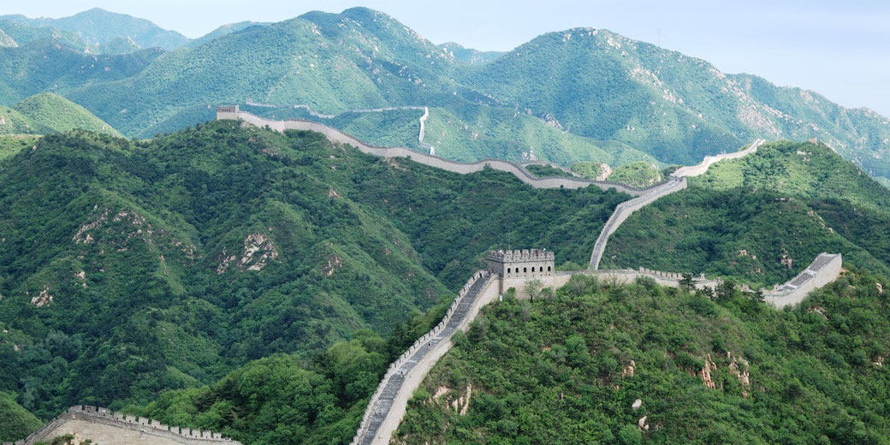
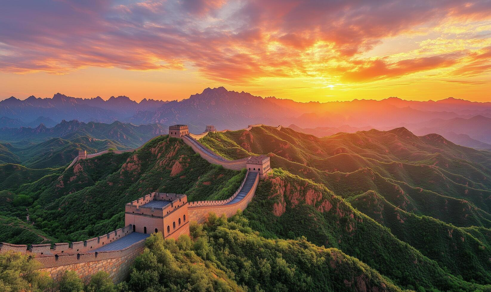
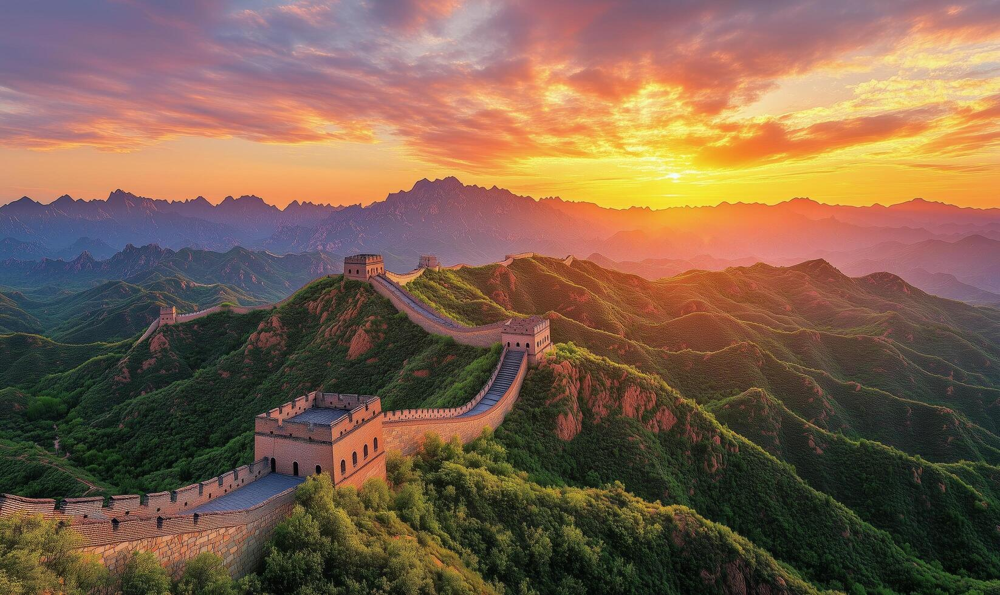
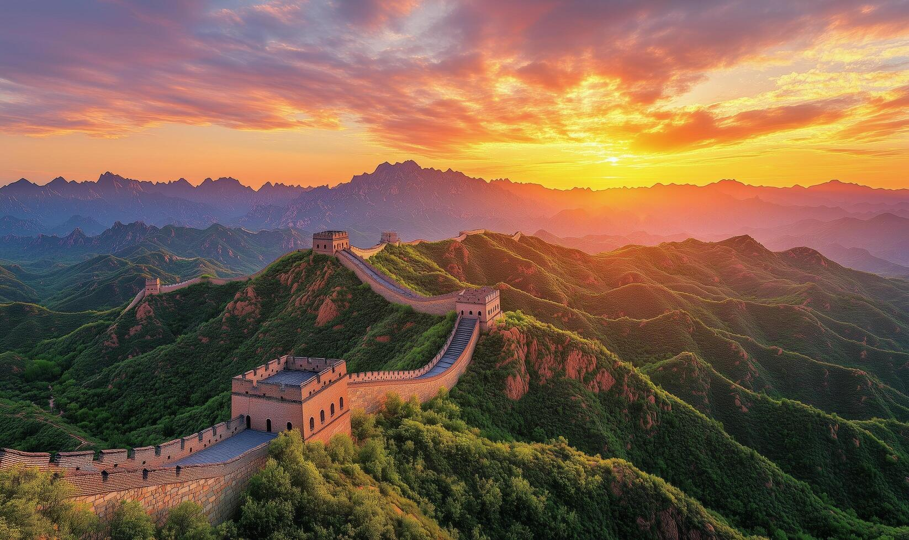

Discover the Great Wall of China
The Great Wall of China is a series of fortifications made of various materials such as wood, brick, and stone. It stretches over 13,000 miles and is an iconic symbol of China’s rich history.
Visitors can explore various sections of the Wall, each offering unique experiences. Hiking the Great Wall is one of the most rewarding adventures in the world.
Address: Badaling, Huairou District, Beijing, China

 

